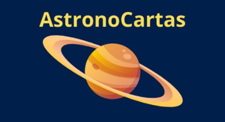

AstronoCartas
Reúna seus amigos, embaralhe as cartas e deixe que a gravidade da diversão te leve para uma viagem pelo espaço.

Com as AstronoCartas você pode explorar planetas, constelações e estrelas de uma maneira divertida e cheia de curiosidades astronômicas! Este jogo foi criado especialmente para quem quer embarcar em uma jornada cósmica enquanto aprende e se diverte!
Materiais
- Baralho de 8 cartas (Planetas): Representando os gigantes gasosos, rochosos e até aquele que é nosso lar — a Terra!
- Baralho de 24 cartas (Constelações): Desde Orion, o caçador celestial, até Serpentário, a única constelação que “abraça” outra.
- Baralho de 32 cartas (Estrelas): Algumas brilham como faróis no céu, outras representam estados brasileiros. Qual será a sua favorita?
- Discos de posição (1 ao 8): Para determinar a ordem das jogadas. Quem será o primeiro a dar início à aventura?
- Moeda (Maior-Menor): Decidirá se a rodada será vencida por valores crescentes ou decrescentes. A sorte está nas estrelas!
Como jogar
O jogo é indicado para 2 a 8 jogadores. Reúna seus amigos, colegas ou familiares e prepare-se para explorar o espaço!
Preparação inicial
- Distribuição das cartas: Embaralhe todos os três baralhos (planetas, constelações e estrelas) e distribua as cartas igualmente entre os jogadores. Cada jogador deve receber o mesmo número de cartas de cada tipo.
- Ordem de jogada: Os discos de posição (de 1 a 8) são embaralhados e distribuídos aos jogadores. Esses números definem a ordem de jogada na primeira rodada. Na próxima rodada, o primeiro jogador será o último da rodada anterior, seguindo uma lógica circular. Por exemplo:
- Primeira rodada: 1, 2, 3, 4, 5, 6, 7, 8.
- Segunda rodada: 2, 3, 4, 5, 6, 7, 8, 1.
Rodadas e categorias
As rodadas seguem uma ordem específica:
- Planetas → Constelações → Estrelas.
Comece com as cartas de planetas, depois siga para as constelações e finalize com as estrelas. Cada fase termina quando as cartas do tipo correspondente acabarem.
No início de cada rodada, todos os jogadores escolhem secretamente uma carta do tipo atual (por exemplo, um planeta) e a colocam à sua frente. Essa carta não pode ser trocada durante a rodada.
Escolha da categoria e lançamento da moeda
O jogador que inicia a rodada escolhe uma categoria para competir (como tamanho, distância do Sol, magnitude etc.) e lança a moeda para cima. O resultado da moeda define como os valores serão avaliados:
- Se cair (M) Maior, a rodada será decidida por ordem decrescente (quanto maior, melhor).
- Se cair (m) Menor, a rodada será decidida por ordem crescente (quanto menor, melhor).
Pontuação
Ao final de cada rodada, os jogadores recebem pontos com base em suas posições:
- 1º lugar: 3 pontos
- 2º lugar: 2 pontos
- 3º lugar: 1 ponto
- Os demais jogadores não recebem pontos.
Quando todas as cartas forem usadas, some os pontos de todas as rodadas. O jogador com mais pontos será o vencedor.!
Regras Especiais (Prepare-se para algumas surpresas galácticas!)
Biodiversidade nos Planetas
- Se a categoria escolhida for “biodiversidade” em uma rodada de planetas, a carta Terra tem um papel especial:
- Se a moeda cair em (M) Maior, o jogador com a carta Terra ganha automaticamente, e os outros não recebem pontos. Afinal, onde mais encontramos tanta vida quanto aqui?
- Se a moeda cair em (m) Menor, todos os jogadores recebem 1 ponto, exceto o jogador com a carta Terra. É como se dissessem: “Ah, Terra, você já tem vida suficiente!”
- Caso ninguém tenha a carta Terra na rodada, todos ficam sem pontos. Triste, né?
- Se a categoria escolhida for “biodiversidade” em uma rodada de planetas, a carta Terra tem um papel especial:
Serpentário e as Serpentes
- Em uma rodada de constelações, se uma carta de serpentes vencer, mas algum jogador tiver a carta Serpentário, essa carta assume automaticamente a vitória. Serpentário é a única constelação dividida em duas partes no céu, então ela merece esse destaque especial!
Estrelas e Estados Brasileiros
- Em uma rodada de estrelas, se o jogador vencedor tiver uma carta de estrela que não representa um estado brasileiro, nenhum jogador com cartas de estados brasileiros recebe pontos. Isso simboliza como as estrelas estrangeiras podem ofuscar as nacionais… pelo menos nessa rodada!
Curiosidades Astronômicas para Inspirar
- Sabia que Júpiter, o maior planeta do Sistema Solar, poderia “engolir” mais de 1.300 Terras e possui 79 luas conhecidas!
- As constelações são como mapas celestiais usados por navegadores e astrônomos há milênios. Orion, por exemplo, é uma das mais famosas e pode ser vista de ambos os hemisférios terrestres.
- Algumas estrelas, como Sirius, são tão brilhantes que podem ser vistas mesmo em áreas urbanas com muita poluição luminosa. Sirius é a estrela mais brilhante do céu noturno!
Jogo desenvolvido por Lucas Caprio Ribeiro